Project Description:
Doctors and care teams are burned out by the volume of MyChart messages. Grace is a chatbot that reduces this burden by helping patients find answers and complete administrative tasks on their own.
Role:
Lead Product Designer
Impact:
In 2022, I redesigned Grace, built its design system, designed conversational flows, and launched it on Providence MyChart.
By year-end, we saw a 318% increase in monthly active users and a 110% increase in appointment conversions. Grace also helped deflect 22% of administrative messages and 8% of total MyChart messages.
Introduction
In December 2021, I joined the Providence Digital Innovation Group (DIG), a product development team pioneering digital solutions within the Providence health system. Our design team was small—just two designers and a manager.
One of my first projects was Grace, a click-bot initially created during COVID-19 to answer frequently asked questions.
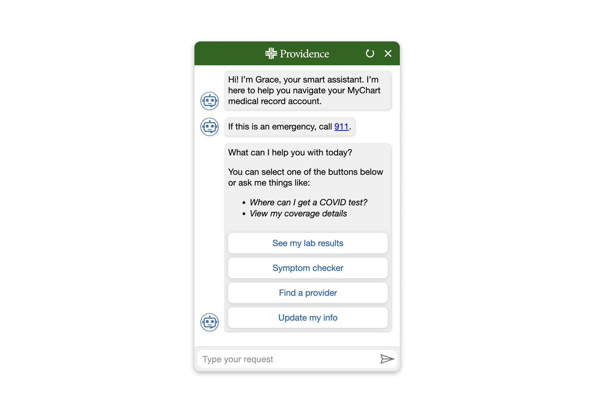
Grace Chabot Design when I first joined
Problem Space
While Grace served its initial purpose as a patient-facing FAQ bot, it wasn’t evolving to meet new challenges:
Doctors and care teams are burned out by MyChart messages
30% of messages were administrative (e.g., rescheduling, billing, prescription refills) and didn’t require clinical judgment.
Grace had low visibility and engagement
The bot was only deployed on a few webpages and had low open rates, meaning most patients never interacted with it.
Grace lacked self-service features
It only provided static FAQ responses and didn’t integrate with the EHR to support personalized actions like managing medications.
The UI was outdated and rigid
Designed as a click-bot, Grace prioritized button-based navigation, making text input and natural conversation an afterthought. This led to a restrictive, transactional experience instead of a more engaging and conversational one.
Lack of a structured design system slowed iterations
Grace’s design system was non-existent, making design iterations slow and inconsistent.
To address these challenges, I led design initiatives to improve engagement, expand capabilities, and establish a scalable design system.
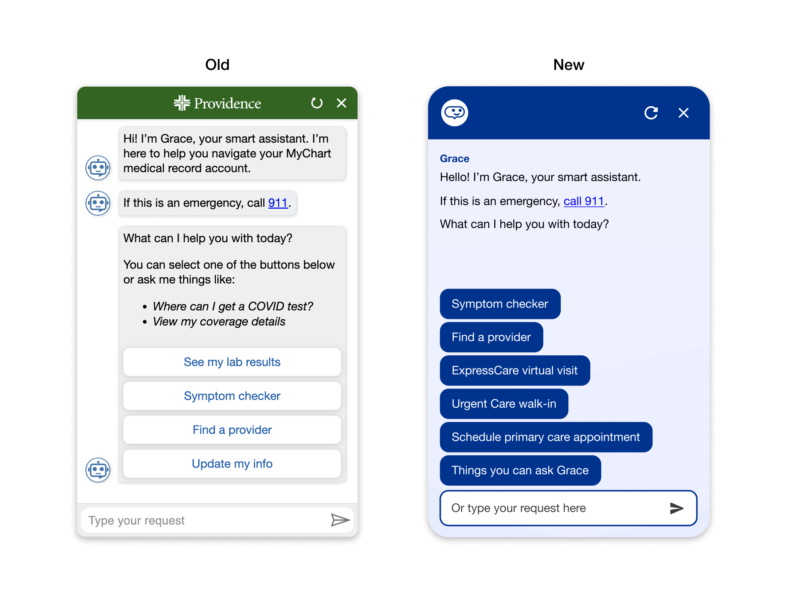
Redesigned Grace to feel more conversational and welcoming
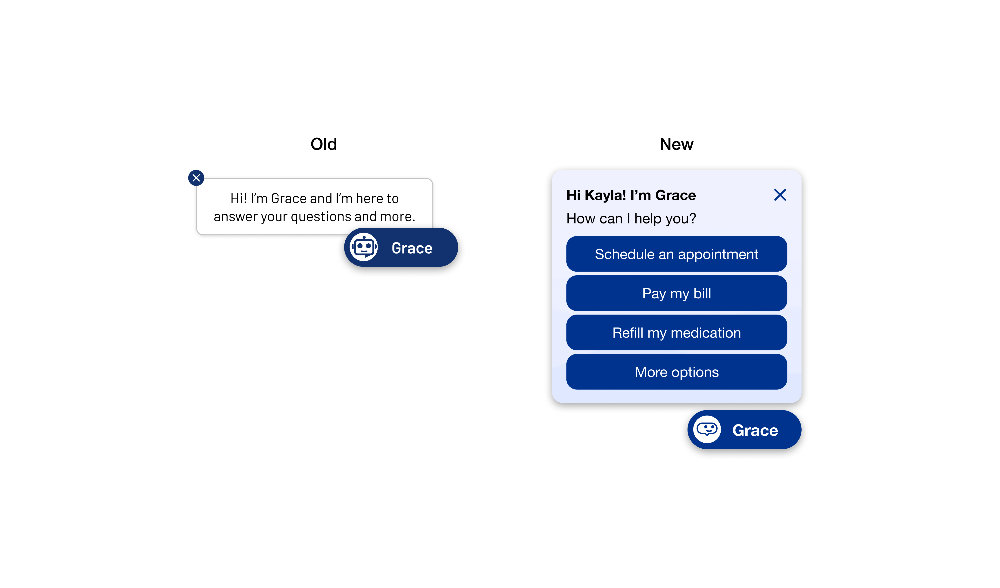
Introduced contextual floating shortcut menus
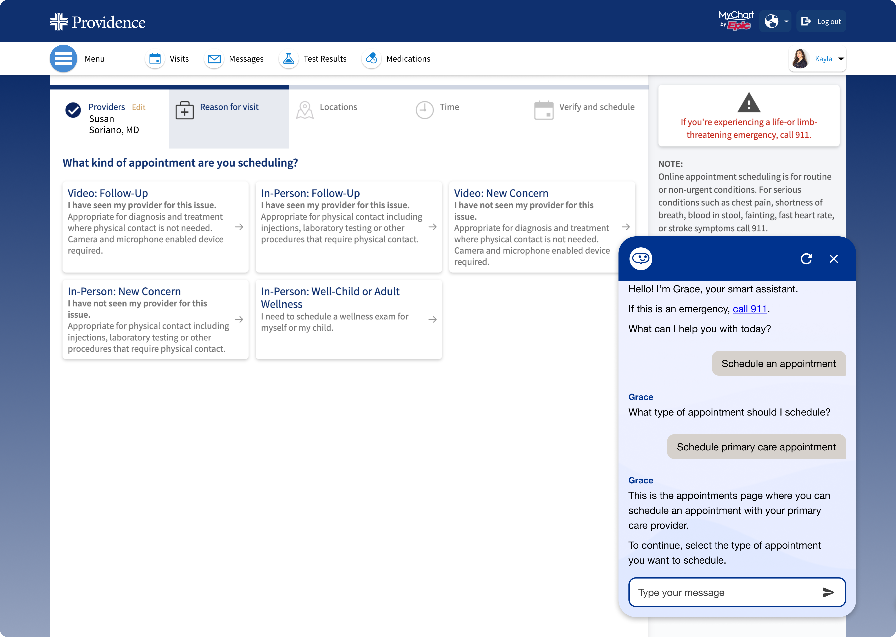
Launched Grace on MyChart
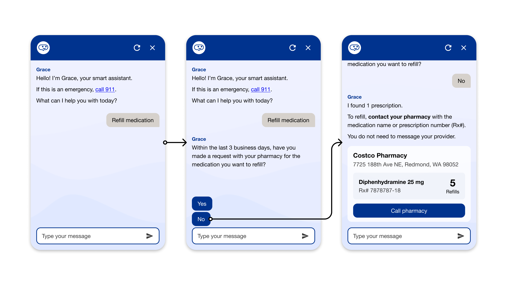
Expanded self-service features
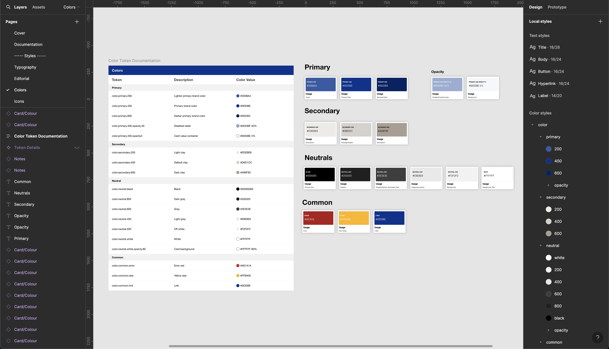
Built the Grace design system
Impact
By year-end, these improvements reduced administrative workload for care teams and drove higher patient engagement.
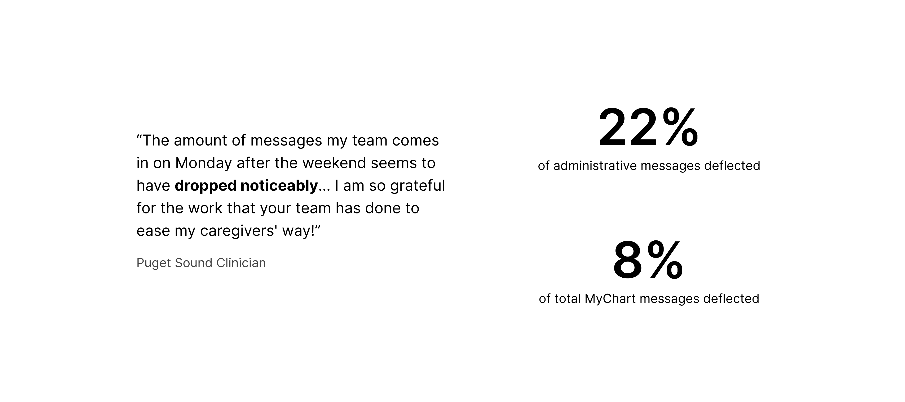
Clinician feedback and message deflection metrics
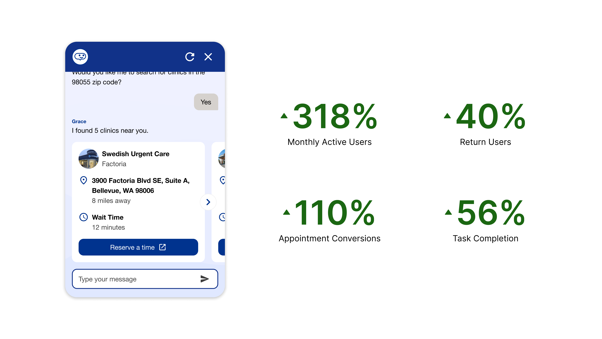
Grace 2022 engagement metrics
How did we get there?
The Journey
Setting the Context
Patients love the convenience of messaging their care team. Asynchronous communication through electronic medical record (EMR) platforms like MyChart has become a standard for managing health.
But care teams are overwhelmed. Doctors face rising message volume, 24-hour response expectations, and unpaid clinical work.
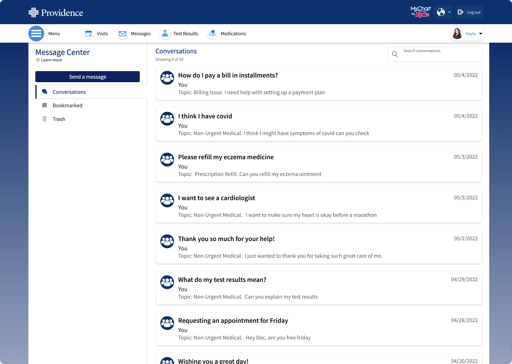
MyChart Messages
Mission Driven Team
The Smart Assistant team's mission is to reduce the volume of messages sent to care teams — enabling clinicians to spend more time practicing at the top of their license.
Understanding the Message Burden
To assess whether a chatbot could meaningfully help, our analytics team classified over 18,000 MyChart messages. We found that 30% were administrative and didn’t require clinical judgment — a significant opportunity for automation and self-service.
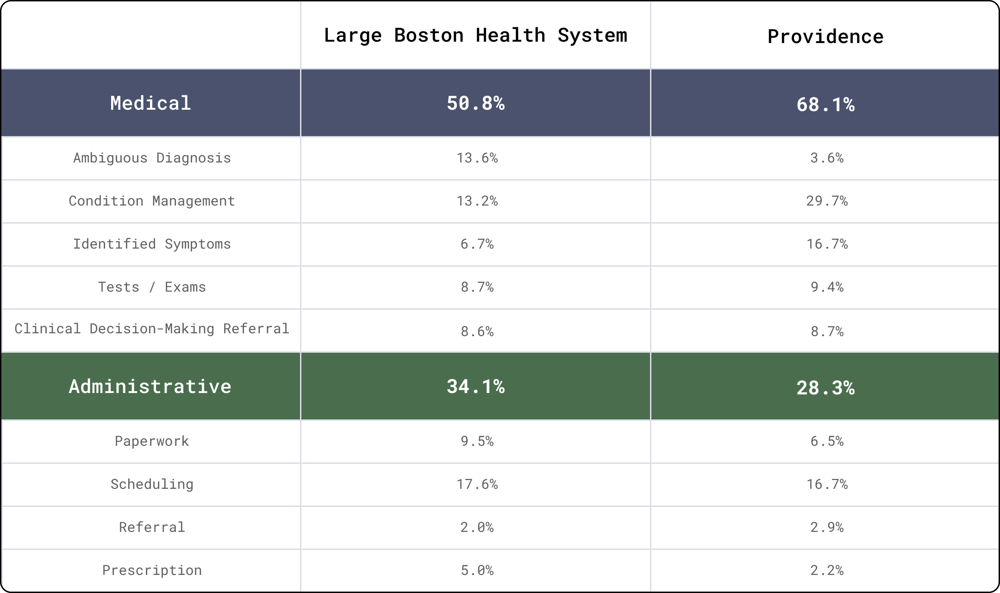
MyChart Messages
The Self-Serve Framework
In complex problem spaces, I prioritize aligning on a clear framework to guide decision-making.
In this case, we aligned on a self-serve strategy: leverage Grace to help patients find answers before they send a message.
Grace would act as the first line of defense, reducing unnecessary messages before they reach the care team.
Evaluating Grace
When starting a new project, I begin by understanding the current capabilities, design patterns, technical foundation, and documentation.
When I joined, Grace was live on a few Providence.org pages and within the Providence mobile app. Its interface was button-driven, with limited self-serve capabilities.
The engineering team had implemented Rasa, an open-source framework for natural language understanding and dialogue management. But documentation was scattered, and no design system existed — making it difficult to iterate quickly.
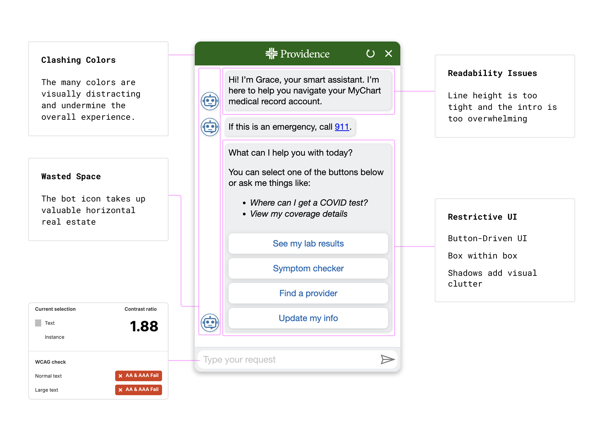
Identifying accessibility and usability issues
Key Performance Indicators
Knowing our KPIs is essential to designing with impact — they define success, guide decisions, and ensure designs deliver measurable outcomes.
At Providence, we focused on three primary KPIs: Monthly Active Users (MAU), Goal Completion Rate (GCR), and Appointment Conversions.
Roadmap Planning and Prioritization
In collaboration with product and engineering, we defined our 2022 roadmap. Guided by our mission to reduce administrative messages and improve KPIs, we prioritized expanding self-service flows and strategically implementing Grace within MyChart.
In parallel, I led design initiatives to increase engagement—refreshing Grace’s look and feel and exploring ways to improve open rates.
Expand Self-Services
Using a combination of utterance analysis and MyChart message classification, our team identified the top administrative use cases to address. Medication management rose to the top.
We broke it down into key tasks: medication refills, new medication requests, and alternative medication requests. The clinical team provided complex flow diagrams outlining how these scenarios were typically handled.
I translated those flows into a more conversational experience—simplifying without losing critical detail. Through multiple rounds of iteration and clinical review, we arrived at a version that felt safe and patient-friendly.
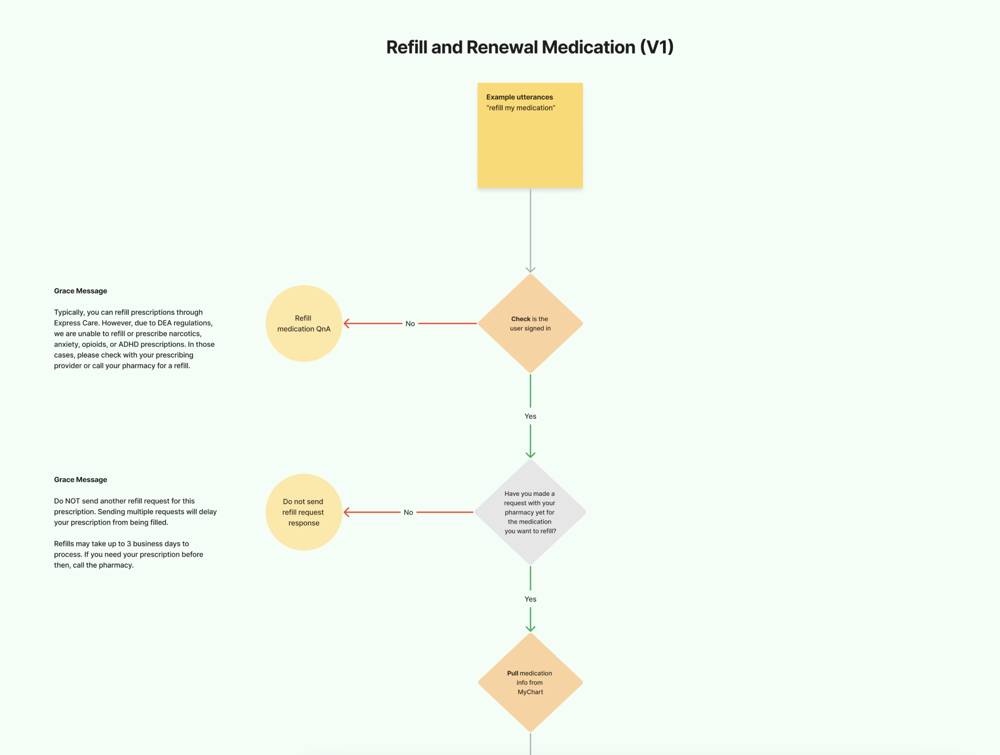
Medication refill flow logic
Once aligned, I used the final flow to design high-fidelity mockups to guide engineering implementation.
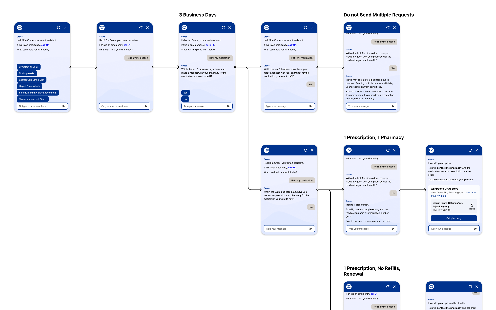
Medication refill high-fidelity mockup flow
Redesign Grace
Redesigning Grace was a highly collaborative effort across design, product, and engineering—but it started with asking why.
Grace’s UI was limiting: open rates were low, the interaction model was unclear, and the visual design felt outdated. We knew a simple visual refresh wouldn’t be enough—we needed a clear north star to guide not just how Grace looked, but how it delivered value.
To shape this direction, I conducted a competitive analysis that helped us align on a tone that felt both professional and approachable—a balance that felt right for healthcare.
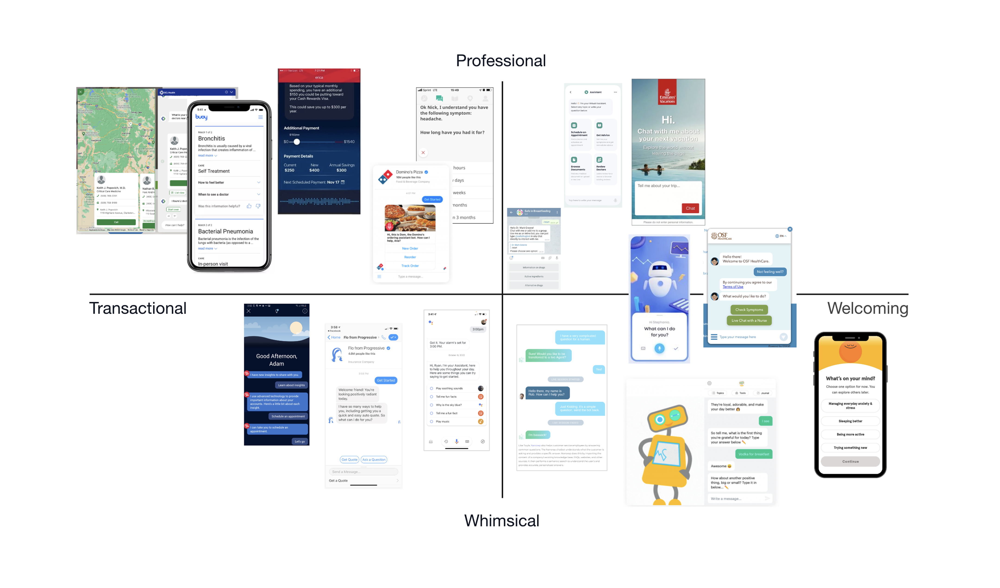
Mapping chatbots along a tone and personality spectrum
With this direction in place, I facilitated a series of working sessions to define the core patterns of the experience: entry point, first-run flow, conversation layout, button behavior, pagination, and text input.
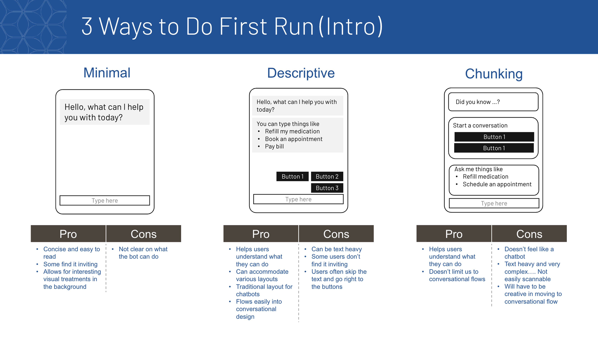
Basic wireframes to guide discussion on chatbot introductions
As part of this vision, we also looked for opportunities to improve engagement. At the time, Grace had a 1% open rate. During the competitive analysis, I identified a common pattern across high-performing chatbots: a floating shortcut menu that surfaced the bot’s value upfront.
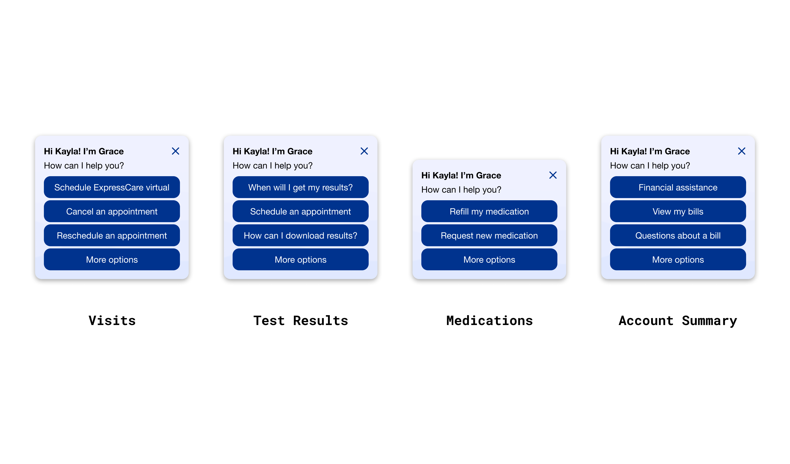
Examples of floating shortcut menus contextual to MyChart pages
I designed and tested this feature with our team, giving patients easier access to Grace’s most useful actions. By year-end, open rates climbed to 8%, and goal conversions increased significantly—early signs that Grace was becoming not just more usable, but more valuable.
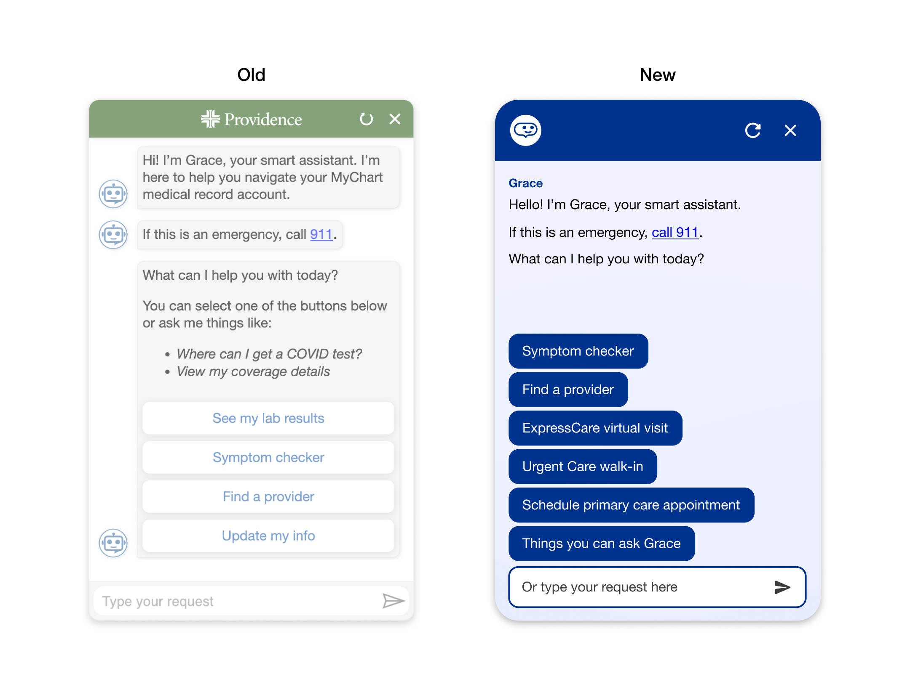
A more approachable introduction
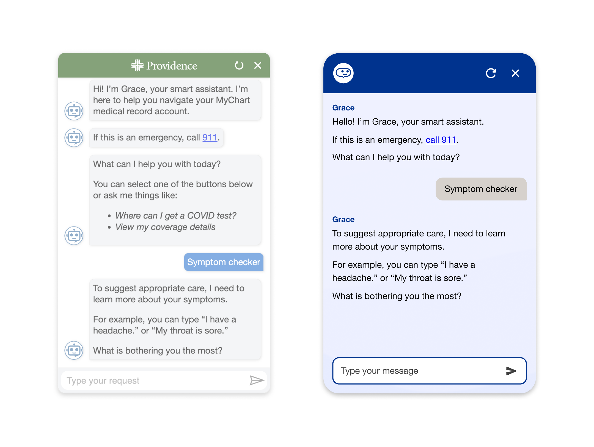
Maximizing our conversational space
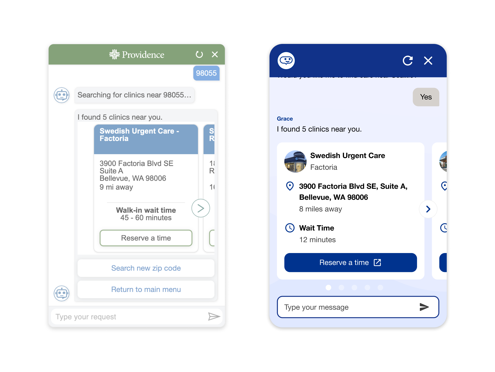
Visually cohesive and aligned with Providence brand colors
Launch Grace on MyChart
We needed to meet patients where they send messages to their care team—directly within MyChart.
In September 2022, we launched a pilot with select primary and specialty care clinics to validate Grace’s ability to offer self-service options and reduce the number of messages sent to care teams. The results were promising: Grace deflected 22% of administrative messages and 8% of total MyChart messages.
With those results, we expanded Grace across all of Providence MyChart—bringing self-service support to more patients and easing the load on care teams system-wide.
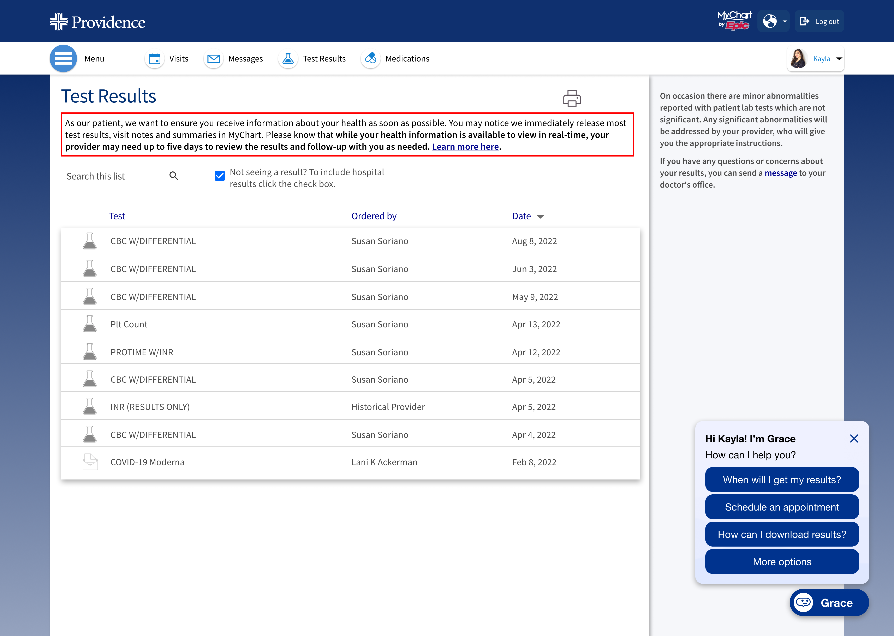
Grace on MyChart providing contextualized support
Building a Scalable Design System
Through out this journey, continuous documentation was key to its success. To support faster iterations and consistent experiences, I built the Grace Design System in Figma — defining styles, components, and interaction patterns.
It brought clarity to a fragmented process and gave the team the structure to support more advanced capabilities over time.
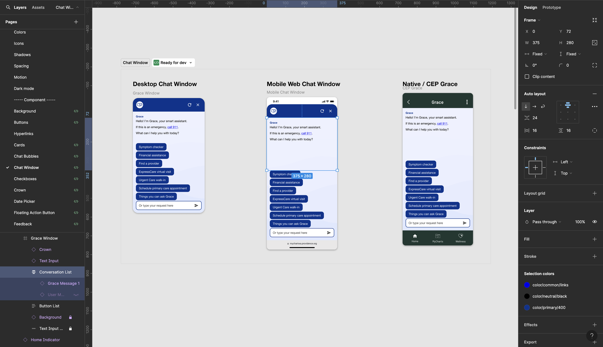
Using the design system to ensure consistency across platforms
Key Learnings
Balancing Product Goals with Design Vision:
Product often prioritized growth metrics like monthly active users, while design pushed for long-term vision and experience quality. I learned the value of advocating for both—driving measurable impact in the short term while also shaping the north star experience. Design can (and should) be a source of innovation, not just refinement.
Using Frameworks and Design Tenets to Guide Ambiguity: In the absence of clear data or research, I leaned on frameworks and design tenets to guide decisions. These helped align the team, justify design direction, and communicate intent—especially when navigating complexity or making tradeoffs.